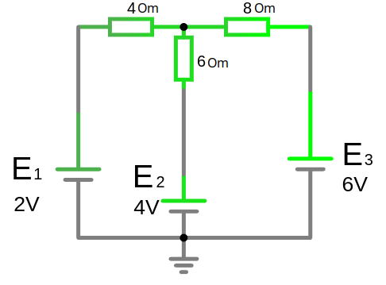
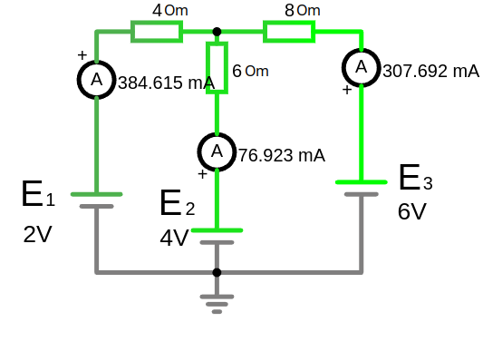
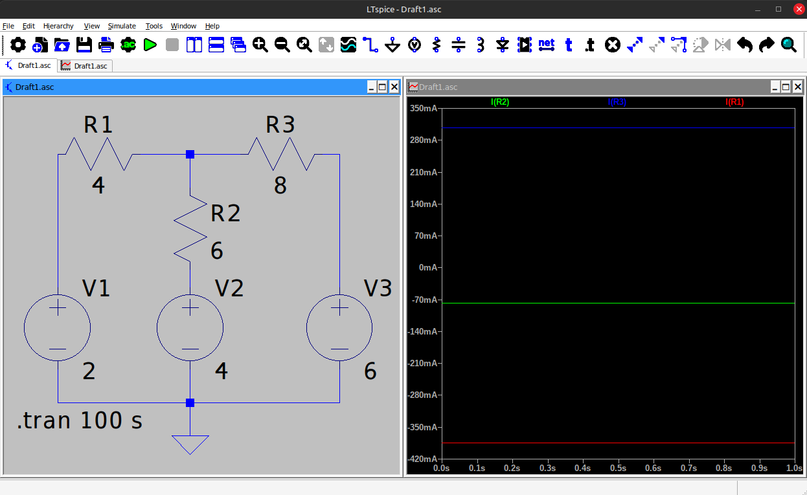

Урок 8. Первый и второй законы Кирхгофа.
Законы Кирхгофа
Законы Кирхгофа описывают основные принципы поведения электрических цепей. Они позволяют рассчитывать токи, напряжения и сопротивления в сложных электрических схемах.
Зачем нужны законы Кирхгофа:
- Анализ электрических цепей: Эти законы позволяют нам составлять математические уравнения, описывающие поведение электрической цепи. Решая эти уравнения, мы можем найти значения токов и напряжений в любой точке цепи.
- Проектирование электрических схем: Законы Кирхгофа необходимы для проектирования новых электрических схем, таких как усилители, фильтры, генераторы и т.д. Они позволяют нам рассчитать значения элементов схемы, чтобы она работала так, как задумано.
- Понимание работы электронных устройств: Понимание законов Кирхгофа необходимо для того, чтобы разобраться в принципах работы различных электронных устройств, от простых лампочек до сложных компьютеров.
- Решение задач по электротехнике: В учебных заведениях и на практике часто приходится решать задачи, связанные с расчетом электрических цепей. Законы Кирхгофа являются основным инструментом для решения таких задач.
Какие задачи можно решать с помощью законов Кирхгофа:
- Расчет токов и напряжений в любой точке цепи: Зная значения сопротивлений и ЭДС источников питания, можно рассчитать силу тока в любой ветви цепи и напряжение на любом элементе.
- Определение эквивалентного сопротивления: Законы Кирхгофа позволяют найти эквивалентное сопротивление сложных электрических цепей.
- Анализ работы различных электронных схем: С помощью этих законов можно анализировать работу усилителей, фильтров, генераторов и других электронных устройств.
Алгоритм применения законов Кирхгофа
-
Обозначьте направления токов:
Предположите направление токов в ветвях цепи в каждом узле. Если итоговый результат конкретного тока получится отрицательным, реальное направление противоположно предположенному. -
Примените первый закон Кирхгофа к узлам:
Запишите уравнения для всех узлов (кроме одного, так как его уравнение будет зависимым от остальных). -
Найти все независимые контуры: Найдите все независимые контуры и произвольно выберите направление для их обхода. При обходе контура те токи которые не совпадают с направлением контура будут суммироваться с минусом.
-
Примените второй закон Кирхгофа к контурам:
Запишите уравнения для каждого контура, включая источники и падения напряжения на элементах. -
Решите систему уравнений:
Полученная система уравнений позволяет найти токи и напряжения.
1. Первый закон Кирхгофа (Закон токов)
Первый закон Кирхгофа (закон токов): Алгебраическая сумма (с учетом знака) токов, сходящихся в узле, равна нулю. Это означает, что в любой точке цепи количество заряда, втекающего в нее, равно количеству заряда, вытекающего из нее.
Суть: Сумма токов, входящих в узел, равна сумме токов, выходящих из него.
Количество токов в цепи определяет количество ветвей (В ветвях с источником тока уже известен ток).
Количество уравнений которое необходимо составить по первому закону Кирхгофа, равно количество узлов минус 1
где - это источник тока
Узел — это точка соединения двух или более проводников.
Пример:

Для узла с токами , , :
-
Произвольно выберем соответвие направления токов и знаки. По умолчанию выбирают, если ток входит в узел то он плюсуются, а токи и выходят то они минусуются:
Применение: Используется для анализа токов в электрических цепях, особенно в параллельных соединениях элементов.
2. Второй закон Кирхгофа (Закон напряжений)
Второй закон Кирхгофа (закон напряжений): Алгебраическая сумма (учитывает знаки) напряжений на всех пассивных элементах замкнутого контура равна нулю. Это означает, что при обходе любого замкнутого контура сумма падений напряжения равна сумме ЭДС.
Или другая формулировка, в любом контуре произвольной электрической цепи, алгебраическая сумма падений напряжений на всех пассивных элементах равна алгебраической сумме электродвижущих сил действующих в этом контуре.
Сумма напряжений, создаваемых источниками питания (батареи, генераторы и т. д.), будет равна сумме напряжений, которые "поглощаются" элементами (резисторами, конденсаторами, катушками и т. д.).
Это очень просто, если в цепи присутствует только один пассивный элемент то он забирает на себя все напряжение, если два пассивных элемента то они делят все напряжения в зависимости от количества Ом сопротивления.
Когда мы выбрали произвольно напрвление токов и направление контура, то при составлении уравнений мы учитываем эти направления. Так при сумировании источников напряжения мы минусуем тот направление которого не совпадает с направлением контура, а при сумировании падений напряжений мы смотрим на то соврадает ли ток с выбранным направление тока контура, если не совпадает тогда отнимаем его:
Суть: В любом замкнутом контуре сумма всех ЭДС (источников напряжения) равна сумме падений напряжения на всех элементах контура.
Количество уравнений которое необходимо составить по второму закону Кирхгофа, для независимых контуров, равно количеству ветвей без источника тока минус количество уравней по первому закону Кирхгофа
Если в контуре нет источника ЭДС то оно равно 0:
Контур — это замкнутый путь в электрической цепи.
Независимый контур - это контур электрической схемы, который включает в себя хотя бы одну ветвь, которой нет в предыдущих найденных контурах, и хотя бы одну ветвь, содержащуюся в предыдущих контурах.
Для расчета схемы выбирают контур так что бы в нем небыло источника тока (источник тока может быть внутри контура)
Применение: Используется для расчёта напряжений и токов в сложных цепях, включая последовательные соединения и многоконтурные схемы.
Пример 1:
Для замкнутого контура с источником напряжения , резисторами и током :

Представьте замкнутую цепь с источником напряжения и двумя резисторами:
Шаги:
-
По второму закону Кирхгофа:
Напряжение на каждом резисторе рассчитывается по закону Ома ():
-
Общий ток в цепи:
- Суммарное сопротивление последовательно соединеных резисторов:
-
Подставляем значения:
-
Проверяем закон Кирхгофа:
Пример 2:
Найти токи во всех участках цепи.

Цепь имеет два независимых контура и три разных тока ветви. Выберем произвольно направления обхода контуров (можно прикинуть относительно узла А, что сумма напряжений положительно направленых к нему будет больше чем встречное напряжение даже с учетом падений напряжения на резисторах) и узел в котором произвольно направления токов (но тоже учитывая логику направления контура можно предположить как будет протекать ток).

Для узла А имеем по первому закону Кирхгофа: или
где:
- - минусуем ток так как он выходит из узла А, а остальные токи плюсуем так как они входят в узел А.
Для 1-го контура по второму закону Кирхгофа:
где:
- - минусуем напряжение так как оно направленно на встречу заданому направлению обхода контура, а c положительным знаком так как его направление совпадает с контуром.
- Суммируя напряжение контура мы его преобразовали к виду , и так как токи ветвей и совпадают с направлением контура поэтому они с положительными знаками.
Для 2-го контура по второму закону Кирхгофа:
Итого имеем систему уравнений:
- (1)
- (2)
- (3)
Подставим значения:
- (1)
- (2)
- (3)
Упростим уравнения (2) и (3) поделив на два и выразим из уравнения (1) и подставим его. Сложим множители :
- (1)
- (2)
- (3)
Приведем коэфициенты для к одному значению, умножив уравнение (2) на 7, а уравнение (3) на 7:
- (1)
- (2)
- (3)
Сложим уравнения (2) и (3), чтобы исключить :
-
(1)
-
Выведем ток из любого предудущего уравнения подставив значение :

Схема из программы LTspice:

Преимущества законов Кирхгофа
- Позволяют анализировать как простые, так и сложные цепи.
- Основа для методов расчёта, таких как метод узловых потенциалов или метод контурных токов.
- Работают для любых типов элементов, включая резисторы, источники напряжения и тока.